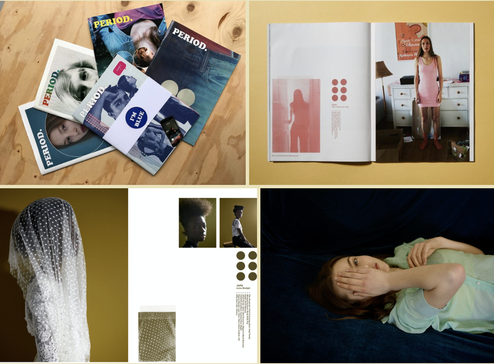
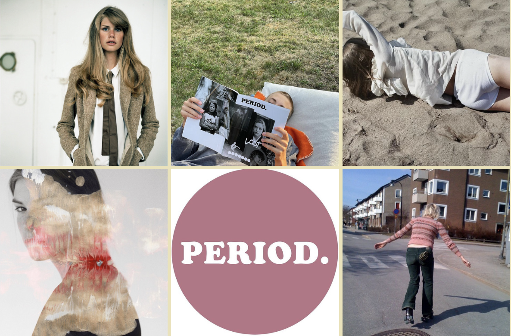

Intervjuer med kreativa människor som delar med sig av egna tankar och erfarenheter
Lena Modigh
Det är svårt att inte skratta när man pratar med Lena. Vi skrattar många gånger under intervjun. Detär inget hon säger, snarare hennes eget skratt som smittar av sig. Det märks att Lena är skarp närhon berättar om sina erfarenheter av livet. Det är efter många misstag som hon hamnat rätt. Det ärefter funderingar och omvärderingar hon tagit beslut. Samtidigt är hon spontan och lättsam. Detbehövs nog lite av båda i livet. Efter att ha arbetat som fotograf i många år har hon nu startat enegen tidning. I tidningen Period syns framför allt många kvinnor med attityd och stolthet. Det ärkonst och mode i kombinerat med kortare texter. Inget nummer är det andra likt. Lena har skapatnågot nytt och modernt i ett gammal format. Det är en hyllning till konsten bakom varje människa.Intervjun utspelar sig i två delar. Första gången vi ses är det i Lenas sommarstuga på Gotland. Detösregnar och vi sitter inne i en friggebod på tomten. Andra gången vi ses är det i Stockholm. Vidricker te och fikar medan Lena berättar om tidningen Period.
Instagram: @lenamodigh | Hemsida: lenamodigh.com | Tidningen Period på Instagram: @periodzine | Tidningen Periods hemsida: periodzine.com
Hur skulle du beskriva dig själv?
Det är svårt att beskriva sig själv. Hur skulle andra beskriva mig? Det beror på vem som får frågan. En del har bilden att jag alltid är glad och positiv. Det stämmer inte. Även i mitt huvud finns många funderingar och tvivel. Det är mänskligt attvara på många sätt och ha både bra och mindre bra dagar. Min vänkrets är inte så stor och med den kan jag dela det mesta jag tänker på. Därför är mina relationer väldigt viktiga för mig. Jag delar inte mina funderingar med vemsomhelst helt enkelt. I övrigt är jag ganska öppen som person.
Vad tyckte du om att göra som barn?
Som barn spenderade jag mycket tid utomhus. Min familj ägde en sommarstuga i Stockholms skärgård, vilket blev till ett andra hem under somrar och lov. Tillsammans med grannbarnen hittade vi på lekar i skogen. Min storebror som är sex år äldre var lite av en superhjältefigur för mig. Han anordnade seglarskola och hade koll på det mesta som kändes viktigt då. Hemma i stan var åldersgapet tydligare och min storebror hade viktigare saker att göra. Jag pysslade med allt möjligt i lägenheten. Urklippta bilder från diverse tidningar och egenkomponerad text på maskin blev till en kokbok. Laga mat och baka var nämligen aktiviteter jag gillade.

Vad jobbar du med idag?
Idag jobbar jag dels som frilansfotograf, dels som sändningsledare och planerare på TV4. Kombinationen att frilansa somfotograf där det kan vara ganska ovisst, och göra uppdrag för TV4 skapar en fin balans mellan kreativitet och trygghet. Jag uppskattar rutinerna och arbetskamraterna på TV4, samtidigt är det foto som är min stora passion.
Hur uppstod ditt intresse för foto?
Mitt intresse för foto har utvecklats under många år. Min pappa tog ofta semesterbilder och av honom ärvde jag en kamera. När jag blev äldre gick jag lite olika fotokurser i Stockholm och New York, samt London College of Communication, och så småningom formades en idé om att fota mer seriöst. Efter gymnasiet arbetade jag på bank. Det var något av det tråkigaste jag gjort. I stället drömde jag om att arbeta med film. Jag reste till New York och fick jobb somassisten under en filminspelning vilket var väldigt lärorikt. Senare när jag kom till London och började assistera en modefotograf insåg jag att det var min grej, vad jag skulle jobba med. Det har aldrig varit kläderna i sig som intresserat mig. Vad som intresserar mig är historian bakom bilden.
Vill du förmedla något med dina bilder?
Det vill jag. Precis vad är svårare att beskriva. Jag är inte mycket för koncept och bilderna får inte kännas krystade. Ofta tar jag bilder på motiv som berör mig vilket förhoppningsvis speglas i bilden och kan beröra andra. Det finns däremot inget uttänkt budskap bakom någon bild. Hur bilden uppfattas avgörs av betraktaren vilket jag gillar. Mycket handlar om att experimentera och se vilken effekt olika bilder kan ha, försöka förstå varför och ändå inse att ingen bild kommer beröra alla.
Instagram: @lenamodigh | Hemsida: lenamodigh.com | Tidningen Period på Instagram: @periodzine | Tidningen Periods hemsida: periodzine.com
Hur har bilderna förändrats sedan du började fota?
Bilderna har förändrats mycket sedan jag fick min första kamera. Det är en naturlig process av att utvecklas som fotograf och förändras som person. Att utvecklas som fotograf handlar mycket om att experimentera och hitta sin nisch. Som barn fotade jag blommor och kompisar. Jag försökte ta bilder som liknade de min pappa tog. Han var den som inspirerade mig att börja fotografera. Jag gick senare över till att jobba som modefotograf. Idag fotograferar jag porträtt, gärna kvinnokroppen och även vardagssituationer. Mitt humör och mina tankar har en stor inverkan på vilka bilder jag tar. När min pappa gick bort följd en period av mer dystra bilder på kyrkogårdar och statyer. Det uppkom en sorts fascination som resultat av sorgen och som speglade min sinnesstämning. Att fotografera är kanske att dokumentera sådant som fascineraren.
Vad inspirerar dig som fotograf?
Kvinnokroppen inspirerar mig mycket. Mamma var alltid helt naturlig med sin kropp. Hon dolde aldrig något eller pratade illa om den på något sätt. Hon var nog väldigt stolt över kroppen och vad den kunde göra för henne. Det har påverkat mig i hur jag förhåller mig till min kropp. Under själva fotograferingen inspireras jag av modellen själv. Det är en konst att framhäva dennes personlighet. Det är lätt att se modellen som en skyltdocka när det i själva verket är en person som vilken människa som helst och ändå helt unik. Det känns viktigt att inte göra om modellen för mycket. Att modellens personlighet får komma fram kan göra så mycket för bilden.
Hur uppkom idén om att starta en tidning?
Det jag gillar med att producera en tidning är känslan av att skapa något från grunden. Period är inte min första tidning. Den första tidningen hette Motley och skapades tillsammans med min man Anthony. Tanken var att samla bilder från flerafotografer utan att lägga så stor vikt vid vilken fotograf som tagit vilken bild. Anledningen är att bilder ibland bedöms eller uppfattas på ett visst sätt endast för att en viss fotograf har tagit bilden. Det var ett sätt att frigöra fotografen från sinabilder. Min andra tidning gjorde jag med min kompis - Matt som bor i England. Han är en duktig stylist och grafisk designer. Animae som tidningen hette bestod av mina bilder och min kusin Kristinas texter. Matt satte ihop tidningen och skapade den grafiska designen. Vi gjorde flera nummer och det tillkom flera fotografer. Vi valde att avsluta när projektet blev för stort och påkostat. Efter det startade jag Period. Matt ville inte vara involverad i samma utsträckning som innan och därför är det jag som bär huvudansvaret och han som hjälper till med designen. Nu har Matt flyttat ut på landet, och fokuserar på det, så jag har parat ihop mig med Julia Knyphausen, svensk Art Director, vilket känns jättespännande! Vi jobbar just nu på nästa nummer.
Vad säger tidningens namn Period om innehållet?
Första tänkte jag Period som i punkt. Sedan tänkte jag att det är kul att ordet har en dubbelmening, det betyder ju även mens. Det var dock inte tanken från början. Jag lägger inga värderingar i om läsaren uppfattar ordet som punkt eller mens.Precis som med bilderna är det kul med olika tolkningar. Jag gillar när det får vara lite flytande.
Vad har varit den största utmaningen med att starta en tidning?
Den största utmaningen för mig är att ha tålamod. Att låta saker ta tid kan vara svårt. Ibland har jag haft en plan för hur processen ska se ut och när tidningen ska vara färdig. Det blir ofta inte som jag har tänkt vilket jag blir mer och mer tillfreds med. Jag försöker lita på processen i stället för att bli frustrerad eller stressad.
Hur är tidningen uppbyggd och hur ser processen ut bakom ett nummer?
Till att börja med är det alltid ett nytt tema för varje nytt nummer. När temat är bestämt tar jag kontakt med olika fotografer, skribenter och tidigare även illustratörer. De som är med i tidningen får relativt stor frihet i vad de vill skapa. Jag förklarar temat och låter dem göra sin grej. Det skulle kännas fel att styra över hur någon annans bilder ska se ut eller text ska vara skriven. Matt är den som designar tidningen. Under processen skickas utkast fram och tillbaka oss emellan. Ibland är designen väldigt olik min grundtanke vilket är bra. En rolig sak är att Matts sinnesstämning syns i sättet han designar, precis som min sinnesstämning påverkar vilka bilder jag tar. När Matts liv är strukturerat så syns det till exempelpå hur tidningens framsida är konstruerad. När Matt är färdig med sin del trycks tidningen upp och börjar säljas över internet och i butik.

Instagram: @lenamodigh | Hemsida: lenamodigh.com | Tidningen Period på Instagram: @periodzine | Tidningen Periods hemsida: periodzine.com
Hur hittar du medverkande till tidningen?
De flesta hittar jag via sociala medier. Det är bara kvinnor som är med. Tidningen har ett sådant tema helt enkelt. Jag vill inte alienera någon, tidningen är för alla, men det är bara kvinnliga medverkande. Jag har flera mappar som fylls på med skribenter och fotografer som verkar intressanta. När en ny tidning ska göras tar jag kontakt med dem som passar in i ämnet. Kontakten börjar med att jag skickar ett direktmeddelande eller mejl. De flesta är positiva till idén och vill vara med men inte alla. Vissa har inte tid medan andra vill ha betalt och då tar jag kontakt med någon annan i stället.
Vilka tips har du till någon som vill arbeta med foto?
Fota mycket! Det är det bästa tipset jag kan ge. Visa dina bilder för andra och försök få respons på vad som är bra och vaddu kan göra bättre. Du kan till exempel delta i fototävlingar eller dela bilderna på sociala medier. Ett annat tips för den som har möjlighet till det är att åka utomlands. Att resa bidrar till ytterligare perspektiv, skapar nya tankebanor och sammanhang. Förutom inspiration kan det skapa möjligheter som är svåra att förutspå och som lägger grunden i din fotokarriär. Det behöver inte vara en lång resa. Norge, Danmark eller Finland kan vara en bra början.
Har du några drömmar?
Det vore häftigt att resa och ta bilder till ett större projekt. Jag vill inte jobba som fotojournalist utan snarare resa till ett område, spendera tid där och dokumentera under en längre period. Det vore häftigt.
Har du något verktyg för att bli mer kreativ?
Det vet jag inte. När man är trött är man inte så kreativ. Även när jag är pigg måste kreativiteten ibland tvingas fram. Ibland handlar det bara om att börja. Annars är det när jag cyklar som saker och ting brukar falla på plats.
Vad är du stolt över?
Jag är stolt över mina barn (skratt). Det är svårt att säga att man är stolt över något. Det låter så präktigt på något vis. Jag kan känna mig nöjd över mycket. Nöjd över var jag är i livet, de val som tagit mig hit och hur jag hanterat olika situationer. Jag måste nog tänka lite… men barnen och min man Anthony är jag stolt över, det är jag säker på.
Var finns din tidning att köpa?
Tidningen säljs framför allt utomlands. I Sverige finns den att köpa på periodzine.com eller i butiken Papercut på Krukmakargatan i Stockholm. Alla försäljningsställen finns för övrigt listade på hemsidan.
Instagram: @lenamodigh | Hemsida: lenamodigh.com | Tidningen Period på Instagram: @periodzine | Tidningen Periods hemsida: periodzine.com
